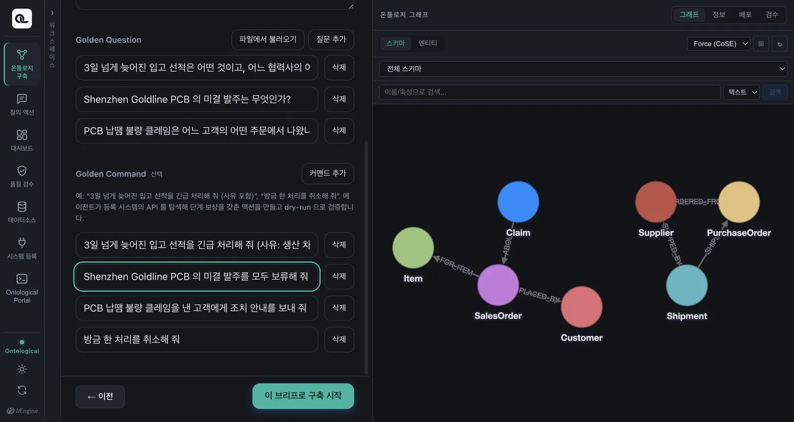
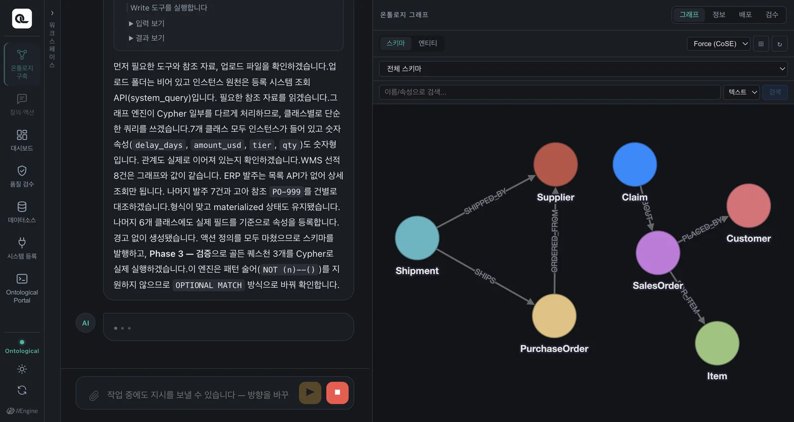
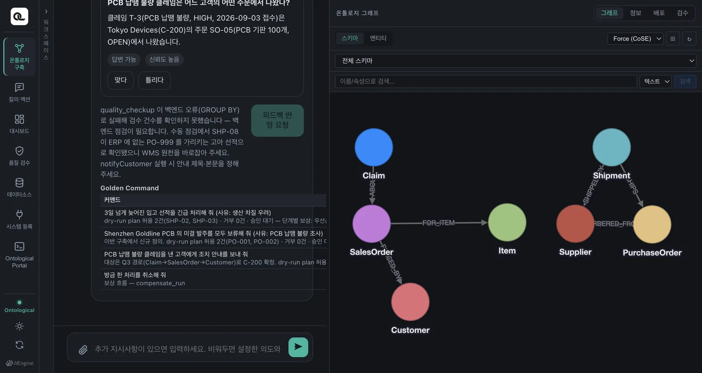

골든 커맨드를 적으면 구축 에이전트가 시스템 API를 살펴 액션을 만듭니다. 액션이 무엇으로 이루어져 있는지 — 단계, 인자 매핑, 보상, 정책 — 를 예제 액션으로 뜯어봅니다.
액션이란#
액션은 온톨로지의 클래스에 붙은 “할 수 있는 일”입니다. 예제의 Shipment 클래스에는 expediteShipment(긴급 출하 처리)가 붙어 있습니다. 액션은 다음을 담고 있습니다.
| 구성 | 뜻 | Shipment.expediteShipment에서 |
|---|---|---|
| 대상 키 | 대상 인스턴스를 가리키는 속성 | shipment_no |
| 입력 | 실행할 때 사람이(또는 에이전트가) 주는 값 | reason (긴급 처리 사유, 필수) |
| 단계 | 차례로 부를 시스템 API | ① WMS 우선순위 URGENT ② ERP 협력사 납기 독촉 |
| 보상 | 단계마다, 그것을 되돌리는 API | ① 우선순위를 실행 전 값으로 ② 납기 독촉 철회 |
| 정책 | 누가, 어떤 대상에 쓸 수 있나 | 역할 scm_operator, 이미 입고된 선적(DELIVERED)은 제외 |
| 승인 | 사람의 승인이 필요한가 | 예제는 모든 계획에 승인 필요 |
| 되쓰기 | 실행 뒤 온톨로지에 반영할 속성 | priority |
| 골든 커맨드 | 이 액션을 만든 지시 | “3일 넘게 늦어진 입고 선적을 긴급 처리해 줘 (사유: 생산 차질 우려)” |
정의를 뜯어보기#
예제 액션의 정의입니다(설명을 줄였습니다).
class_name = "Shipment", action_name = "expediteShipment", key_property = "shipment_no"
parameters = {"reason": {"type": "string", "description": "긴급 처리 사유"}} # 필수
steps = [
{"name": "wms", "system": "sample-wms", "operation_id": "setShipmentPriority",
"arg_mapping": {"path.shipment_no": "$this.shipment_no", "body.priority": "URGENT",
"body.reason": "$params.reason", "body.requestedBy": "$actor.sub"},
"compensation": {"system": "sample-wms", "operation_id": "setShipmentPriority",
"arg_mapping": {"path.shipment_no": "$this.shipment_no",
"body.priority": "$before.priority",
"body.reason": "$cancel.reason"}}},
{"name": "erp", "system": "sample-erp", "operation_id": "createExpediteRequest",
"arg_mapping": {"body.poId": "$this.ref_po_no", "body.reason": "$params.reason"},
"compensation": {"system": "sample-erp", "operation_id": "withdrawExpediteRequest",
"arg_mapping": {"path.request_id": "$steps.erp.response.id",
"body.reason": "$cancel.reason"}}},
]
policy = [{"roles": ["scm_operator"], "when": "target.ship_status != 'DELIVERED'"}]
writeback_property = "priority"
인자 매핑 — 값은 어디서 오나#
arg_mapping의 왼쪽은 API 요청의 자리(path.…는 URL 경로, body.…는 본문), 오른쪽은 값의 출처입니다.
| 출처 | 뜻 | 예 |
|---|---|---|
$this.<속성> |
대상 인스턴스의 속성 | $this.shipment_no → SHP-03 |
$params.<이름> |
실행할 때 준 입력 | $params.reason → “생산 차질 우려” |
$actor.<클레임> |
실행한 사람(또는 에이전트) | $actor.sub → lite-agent |
$before.<속성> |
실행 직전의 대상 속성 값 | $before.priority → NORMAL |
$steps.<단계>.response.<경로> |
앞 단계 API 응답의 값 | $steps.erp.response.id → 납기 독촉 번호 |
$cancel.reason |
취소할 때 준 사유 | “사용자 요청으로 긴급 처리 취소” |
| 그냥 값 | 고정값 | "URGENT" |
$before와 $steps가 보상을 가능하게 합니다. 우선순위를 되돌리려면 “원래 값이 무엇이었는지”를, 납기 독촉을 철회하려면 “어느 독촉을 보냈는지”를 알아야 하기 때문입니다. 지워 버리는 것이 아니라 원래 상태로 되돌리는 것이 보상입니다.
정책 — 누가, 무엇에#
정책은 규칙의 목록입니다. 규칙마다 역할(roles)과 조건(when)이 있고, 하나라도 맞으면 허용, 하나도 맞지 않으면 거부합니다(기본 거부). 조건은 CEL이라는 작은 표현식 언어로 씁니다.
| 쓸 수 있는 것 | 예 |
|---|---|
target.<속성> |
target.status == 'OPEN' — 미결 발주만 |
actor.<클레임> |
target.plant == actor.plant — 자기 공장의 설비만 |
params.<이름> |
params.supplierName == target.approvedSupplier — 승인 공급처에만 발주 |
정책은 대상마다 판정됩니다. 계획을 세우면 대상 하나하나에 허용/거부와 사유가 붙습니다(16장). 그리고 실행 직전에 한 번 더 판정합니다 — 계획 뒤에 데이터가 바뀌었을 수 있으니까요.
따라 하기 — 골든 커맨드로 액션 만들기#
예제에는 액션이 이미 세 개 있습니다. 시연에서는 그중 「발주 보류」를 지운 뒤, 골든 커맨드로 에이전트가 다시 만들게 했습니다. 여러분은 새 골든 커맨드로 따라 해 봅시다.
- 「온톨로지 구축」을 열고 소스에서 시스템
sample-erp를 고릅니다. 문서도 데이터베이스도 아닌, 시스템의 API가 이번 구축의 재료입니다. - 대상에서 기존 스키마 「공급망 운영 (예제)」를 고릅니다(추가 인제스천). 개념은 이미 있으니, 할 수 있는 일만 더합니다.
- 의도의 Golden Command에 새 지시를 적습니다. 예:
한빛정밀의 미결 발주를 모두 보류해 줘 (사유: 단가 재협상) - 「이 브리프로 구축 시작」.

에이전트는 등록된 시스템의 API를 살핍니다. 발주를 보류하는 API와 보류를 푸는 API가 있다는 것을 찾아, 보류를 단계로, 해제를 보상으로 묶고, 정책을 붙입니다(시연 실측 약 4분 반).

끝으로 실제로 실행하지 않고 계획만 세워 보는 드라이런으로 골든 커맨드를 검증합니다. 대상이 몇 건이고, 정책을 통과했는지, 승인이 필요한지가 보고서에 남습니다.

이미 같은 일을 하는 액션이 있다면
“한빛정밀의 미결 발주를 보류해 줘”는 사실 기존 액션 holdPurchaseOrder로 할 수 있습니다(대상 조건만 다름). 이럴 때 에이전트는 새 액션을 만들지 않고 “기존 액션으로 충족된다”고 보고합니다. 정말 새 액션이 생기는 걸 보고 싶다면, 기존 액션으로 할 수 없는 일을 시켜 보세요 — 예를 들어 CRM의 createNotice로 “납기가 늦어지는 발주의 품목을 산 고객에게 지연 안내를 보내 줘”.
어떤 액션이 있는지 확인하기#
질의·액션 탭에서 이렇게 물어보면 됩니다.
어떤 액션을 쓸 수 있어?
에이전트가 지금 쓸 수 있는 액션(여러분의 역할로 허용된 것만)과 각 액션의 대상·입력·단계를 알려 줍니다.
확인 문제
PurchaseOrder.holdPurchaseOrder의 보상은 무엇을 부를까요? 그 보상의 인자에$before가 필요할까요?- 고객 안내(
Customer.notifyCustomer)의 보상은withdrawNotice입니다. 철회할 안내의 번호는 어디서 알 수 있을까요? - “공장장만, 자기 공장의 설비에만, 한 번에 3대까지” 쓸 수 있는 액션의 정책 조건을 생각해 보세요.
정답 보기
- ERP의
releasePurchaseOrder(보류 해제). 예제 ERP는 보류할 때 보류 전 상태를 스스로 기록해 두고, 해제하면 그 상태로 되돌리므로$before가 필요 없습니다. 시스템이 이전 상태를 기억하지 않는다면$before.status를 넘겨야 합니다. - 앞 단계(
createNotice)의 응답에 있는 안내 번호 —$steps.crm.response.id. - 규칙
{"roles": ["plant_manager"], "when": "target.plant == actor.plant"}. “한 번에 3대까지”는 정책이 아니라 액션의 최대 대상 수(max targets) 설정으로 겁니다.